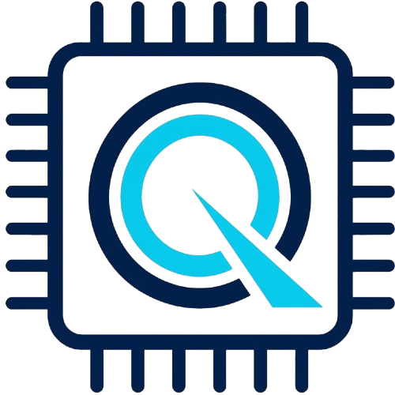

💻
Soporte técnico a domicilio
Reparación de computadoras, instalación de equipos, diagnósticos y mantenimiento preventivo en el lugar solicitado.

Atención técnica móvil y seguridad digital para todos los niveles de negocio.
Reparación de computadoras, instalación de equipos, diagnósticos y mantenimiento preventivo en el lugar solicitado.
Configuración Wi-Fi, equipos de red, conexión de dispositivos, optimización de velocidad y estabilidad.
Actualización de hardware, mejora de RAM, almacenamiento, ventilación y optimización del rendimiento.
Instalación de software antivirus, escaneo de seguridad, control de amenazas y permanencia del sistema.
Detección rápida de errores, malware, fallas físicas y ajustes de configuración del sistema operativo.
Soporte remoto y presencial para atender solicitudes urgentes y mantener la operación del cliente.